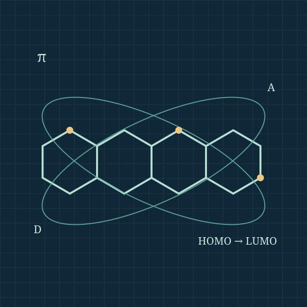

Molecular design & synthesis
Development of donor–acceptor chromophores, chalcones and heterocyclic molecular scaffolds with tunable π-conjugation.
I am Muhammad Naeem Khan, a PhD researcher at the Lahore University of Management Sciences (LUMS), working at the intersection of organic synthesis, photophysics and molecular optoelectronics.

Research profile
AT THE INTERSECTION OF SYNTHESIS AND FUNCTION
Connecting molecular structure to optical, electronic and redox properties through thoughtful molecular design.
My research focuses on the synthesis and characterization of π-conjugated organic compounds, particularly donor–acceptor architectures with potential applications in optoelectronic technologies. I am interested in how donor strength, acceptor identity, conjugation and structural rigidity affect light absorption, fluorescence, charge transfer and electrochemical behavior.
Under the supervision of Dr. Rahman Shah Zaib Saleem at LUMS, I combine synthetic organic chemistry with UV–visible and photoluminescence spectroscopy, cyclic voltammetry, and DFT/TD-DFT calculations to build structure–property relationships.
Understanding how molecular architecture governs function, from the flask to electronic structure.
Development of donor–acceptor chromophores, chalcones and heterocyclic molecular scaffolds with tunable π-conjugation.
Investigation of absorption, fluorescence, solvatochromism and intramolecular charge-transfer behavior in functional molecules.
Interpreting redox responses and frontier molecular orbitals using cyclic voltammetry, density functional theory and excited-state calculations.
Exploring molecular systems for organic photovoltaic and related technologies through structure–property-guided materials discovery.
Selected peer-reviewed publications with publisher DOI links. Listed chronologically, newest first.
Journal of Photochemistry and Photobiology A: Chemistry, 481, 117447.
Journal of Photochemistry and Photobiology A: Chemistry, 481, 117426.
Journal of Molecular Structure, 1378, 147267.
Journal of Molecular Structure, 1340, 142526.
Selected publications only. Full bibliography, bibliometric profiles and downloadable manuscripts can be added once verified.
A selection of ongoing and recent research directions combining synthesis, characterization and computation.
Donor and acceptor modification of thiophene-bridged chalcones to map absorption, emission, charge transfer and redox response.
Terminal-group engineering of conjugated chromophores for controlled optical, electrochemical and molecular electronic properties.
Exploring how cyclization and molecular rigidity influence fluorescence, conjugation and structure–property relationships.
Scientific dialogue, mentorship and collaborative research are central parts of my academic development.
Atlanta, USA · Research presentation on naphthyl chalcones
Doha, Qatar · Scientific participation
Lahore University of Management Sciences
Departmental representation and Graduate Program Committee service
Interested in synthetic organic chemistry, molecular optoelectronics or potential research collaborations? I'd be happy to connect.